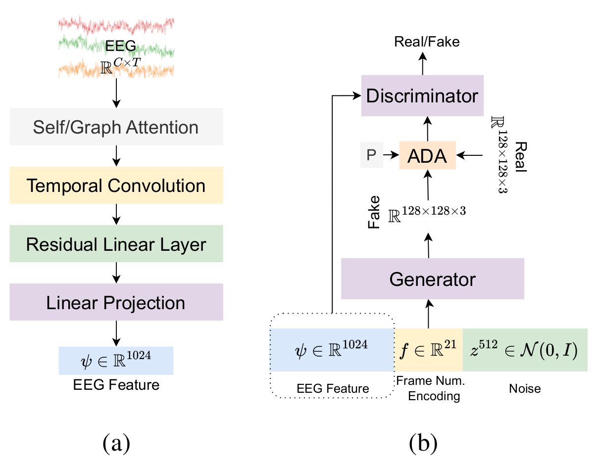
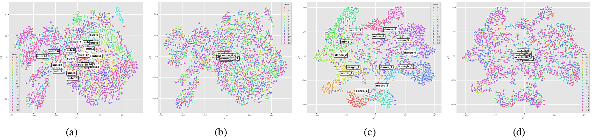

Beyond Reconstruction: What EEG-to-Video Decoding Actually Recovers
We generate short videos from EEG alone and introduce controlled diagnostics that reveal what EEG-conditioned generation recovers: stimulus-level information that the generator uses as a content selector.
Generated video frames from EEG. Ground-truth and generated frames for clips shown to participants in SEED [1,2], EEG-Video Action [4] and SEED-DV [8]. Each clip has eight frames. The EEG provides semantic guidance, and the dataset-specific GAN prior provides fine spatial detail.
72.1%
13-way video decoding
EEG-Video Action, all subjects (chance 7.7%).
82.3%
Follows swapped EEG
Outputs shift to the donor's class when EEG is swapped.
4 / 4
Above chance on unseen videos
All four held-out splits, every seed, over a random encoder (k-means).
0.62 vs 0.43
Class-label reference
SSIM of a one-hot label generator vs. the EEG generator.
Abstract
TL;DR — Reconstruction scores alone cannot separate trial-specific decoding from a strong generative prior. Our diagnostics show that EEG drives the stimulus-level content of the generated video.
Reconstructing dynamic visual stimuli from EEG recordings is challenging due to the noisy, non-stationary nature of EEG signals and the limited availability of EEG-video datasets. We present EEGVid, a framework that learns EEG representations using triplet loss and reconstructs dynamic videos with a temporally conditioned GAN. We study what these representations encode and how this information supports generation. First, visual representations retain emotional structure, while emotion-based supervision does not preserve the same fine-grained visual information. Second, triplet learning shifts EEG features away from subject-specific structure toward stimulus-related information. Third, analysis across brain regions, hemispheres, and time reveals consistent differences in visual and emotional encoding, with temporal regions contributing strongly across tasks. Finally, we evaluate video generation using three controlled diagnostics. The learned encoder generalizes above chance to unseen video classes, while mismatched EEG conditioning shifts generated content toward the substituted stimulus, showing that the generator actively uses EEG as a content signal. A ground-truth class label yields stronger reconstruction metrics, although follow-up experiments show that it also provides a cleaner conditioning target. Together, these results show that EEG exhibits a consistent visual and emotional structure that can support dynamic video generation, whereas current reconstruction primarily reflects coarse stimulus-level information rather than fine-grained, trial-specific decoding.
Research questions
RQ1How are visual and emotional features related?
In the SEED dataset, emotions are induced through video content. We test whether visual features also carry affective information. Our results show that emotional information is largely content-driven, with visual representations retaining enough affective structure for clustering.
RQ2Do visual or emotional features retain subject-specific information?
While untrained features cluster by subject, learned features emphasize stimulus information and reduce subject-related bias.
RQ3How do different brain regions contribute to encoding?
We find that the temporal lobe is the most informative across tasks, the left hemisphere dominates for video classification and the right hemisphere for emotion, and, when training and test subjects overlap, frontal channels outperform posterior channels in both tasks.
RQ4Can dynamic videos be reconstructed from EEG, and how much of this reconstruction reflects genuine trial-specific decoding?
By conditioning a GAN on EEG features and temporal indices, we show that generated frames align semantically with the videos participants observed. We then introduce three controlled diagnostics: a held-out-stimulus generalization test for the encoder, a mismatched-conditioning control for the generator, and a class-conditional baseline that compares EEG with a ground-truth label. These tests determine how much of the observed alignment survives rigorous evaluation and reveal where the pipeline's apparent success is limited.
Method
A triplet-trained EEG encoder feeds a StyleGAN-ADA generator. A positional encoding of the frame index turns an image generator into a video generator.

Framework. (a) A modified NICE EEG encoder [6] maps a 2-second EEG segment to a 1024-d unit-normalized feature. (b) A StyleGAN-ADA generator [7], trained from scratch with an added L1 loss to the ground-truth frame, synthesizes each frame from this feature concatenated with a sinusoidal encoding of the frame index (21-d for SEED and SEED-DV, 5-d for EEG-Video Action).
1
Learn from EEG only
Triplet loss pulls together EEG segments from the same video and pushes apart different videos. No image or text model shapes the representation.
2
Condition on time
The frame index is encoded and appended to the EEG feature. Without it, frames are almost static: optical-flow score 0.276 vs 0.896 with it, and 0.479 for real video, on EEG-Video Action. The motion comes from the frame index, not from the EEG.
3
Probe, don't just score
The generator is a probe. Controlled interventions test what the EEG actually contributes beyond the generator's prior.
Qualitative results
Ground-truth clips next to clips generated from EEG. Each clip has eight frames. Switch datasets, compare side by side or with a slider, and click any clip to enlarge it.
Test clips are held-out 2-second segments of the videos in each dataset (random 80/10/10 split).
Dataset
PSNR ↑
SSIM ↑
LPIPS ↓
CLIP-Sim ↑
SEED
10.80
0.153
0.587
0.679
EEG-Video Action
16.22
0.431
0.418
0.772
SEED-DV
9.62
0.143
0.690
0.558
SEED-DV · EEG2Video [8] (reported)
–
0.256
–
–
What does EEG encode?
We train the encoder on channels from one brain region at a time, and mask time windows at inference. Explore the results by task, dataset and evaluation regime.
Regime
AccuracyMasked time windowChance

Controlled diagnostics
Reconstruction scores alone cannot separate trial-specific decoding from a strong generative prior. One sanity check and three controls on EEG-Video Action show what the generator takes from the EEG.
Sanity check
Does the generator need EEG at all?
We replace the learned EEG embeddings with random vectors from N(0, I) and keep everything else fixed. Random conditioning gives frames without class-consistent content. EEG conditioning gives consistent, stimulus-aligned content.
The generator relies on structured EEG input. Control 2 further tests whether it follows the specific trial encoded in the EEG.
Held-out-stimulus generalization
The encoder is retrained four times, each time with a different set of videos held out of training. We compare it with a randomly initialized encoder on the held-out videos only.
Metric
Trained encoderRandom encoder
Mismatched-conditioning control
Each test segment's conditioning is replaced with that of a different (donor) trial at the same frame position. We then ask which class the output looks like, using the nearest CLIP class prototype.
Looks like donor classLooks like original class (1.4% / 0.4%)Neither
Reading. The generator uses EEG as a content selector: CLIP similarity to the donor prototype (0.893) exceeds similarity to the original (0.754). The output follows the stimulus class carried by the EEG.
Class-conditional baseline
An identical generator is trained with a one-hot trial label in place of the EEG feature and evaluated on the same 30,096 test segments.
Conditioning
PSNR ↑
SSIM ↑
LPIPS ↓
CLIP-Sim ↑
EEG feature
16.22
0.431
0.418
0.772
Ground-truth label
17.13
0.620
0.285
0.866
Reading. The label is a cleaner, easier target: it is followed more strictly when swapped (94.3% vs 82.3%). Its outputs are not collapsed (generated vs real diversity 0.258 vs 0.265 LPIPS). The label therefore serves as a class-level reference, and closing the gap calls for encoders that recover segment-level information from EEG.
Bottom line. EEG carries stimulus-level information that the generator uses as a content selector. These controls, rather than reconstruction scores alone, give a more informative basis for evaluating EEG-to-video models. They need no change to the generator and apply to any architecture. Natural next steps are datasets with repeated presentations, within-class swaps, held-out-video generation, and encoders with stronger cross-subject alignment.
Datasets
All EEG is resampled to 200 Hz and cut into non-overlapping 2-second segments aligned with the video.
SEED
15 subjects × 3 sessions15 clips62 ch
Emotion dataset [1,2]. Four-minute film clips chosen to induce positive, neutral or negative emotion. Recorded with a 62-channel ESI NeuroScan system [3].
Create a directory named dataset, and inside it a directory named SEED.
Place the downloaded Preprocessed_EEG directory inside dataset/SEED.
Place video_chunks inside dataset/SEED.
Set PATH_TO_DATASET in ./Preprocessing/0.SEED/splitter_2.py.
Run ./Preprocessing/0.SEED/splitter_2.py. Segments are written to dataset/SEED/eeg_video_dataset_random_split_v2_tokens.
Preprocessing: EEG-Video Action
Create a directory named ACTION inside dataset.
Place the downloaded SingleShot directory inside dataset/ACTION.
Set path_to_dataset in ./Preprocessing/1.ACTION/segment.py and run it. EEG segments are written inside dataset/ACTION/Preprocessed_SingleShot.
Place the downloaded videos in dataset/ACTION/SingleShotVideo.
Set path_to_dataset in ./Preprocessing/1.ACTION/chunck_video.py and run it. Video segments are written to the same directory.
EEG and video segments share file names, so they can be paired by name.
References
W.-L. Zheng and B.-L. Lu. Investigating critical frequency bands and channels for EEG-based emotion recognition with deep neural networks. IEEE TAMD, 7(3):162–175, 2015.
R.-N. Duan, J.-Y. Zhu and B.-L. Lu. Differential entropy feature for EEG-based emotion classification. IEEE/EMBS NER, 81–84, 2013.
Y. Yao, A. Stebner, T. Tuytelaars, S. Geirnaert and A. Bertrand. Identifying temporal correlations between natural single-shot videos and EEG signals. Journal of Neural Engineering, 21(1):016018, 2024.
Y. Song, B. Liu, X. Li, N. Shi, Y. Wang and X. Gao. Decoding natural images from EEG for object recognition. arXiv:2308.13234, 2023.
T. Karras, M. Aittala, J. Hellsten, S. Laine, J. Lehtinen and T. Aila. Training generative adversarial networks with limited data. NeurIPS, 33:12104–12114, 2020.
X.-H. Liu, Y.-K. Liu, Y. Wang, K. Ren, H. Shi, Z. Wang, D. Li, B.-L. Lu and W.-L. Zheng. EEG2Video: Towards decoding dynamic visual perception from EEG signals. NeurIPS, 37:72245–72273, 2024.